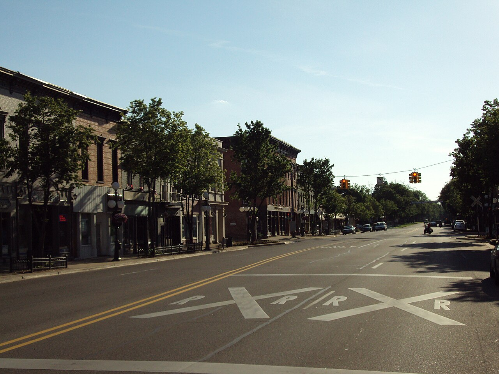

ART TRAIL TECUMSEH
Unexpected art.
At your own pace.
Start with a sculpture. Follow your curiosity. Leave a little space for a new perspective.
Explore the trail preview
DOWNTOWN TECUMSEH, MICHIGAN
Take your time. Find your people.
Discover the good things waiting downtown.
MAKE ROOM FOR A GOOD TIME
Markets, music, and moments worth making.
Fictional events · May–June 2027 demo
Choose an end date on or after the start date.
THE BEST PLANS LEAVE ROOM TO WANDER
A fresh find. A work of art. A reason to linger.
Two very different ways to make a day downtown.
ART TRAIL TECUMSEH
Start with a sculpture. Follow your curiosity. Leave a little space for a new perspective.
Explore the trail previewTECUMSEH FARMERS MARKET
Seasonal finds, handmade treasures and a chance to meet the people behind them.
Get to know the marketA SELF-GUIDED DISCOVERY
Select a numbered stop to explore a sample artwork.
Fictional artwork · diagram is not a navigation mapActual Art Trail & official guide ↗ (opens in a new tab)An imagined bronze form about the places we meet. A sample profile for artwork, artist and installation details.
Original fictional concept · artist not assignedBEFORE YOU FILL YOUR BASKET
The official website lists The Market on Evans at 213 North Evans Street. Check the official page for current directions and access information.
See the official market page for approved season dates, hours and exceptions. Dates in this demonstration's event calendar are fictional.
Follow the official market link for the current application and contact information. This demonstration does not collect applications.
SMALL BUSINESSES. BIG PERSONALITY.
Good things happen when you shop small.
Fictional businesses for demonstration
YOU BRING THE CURIOSITY
Choose a mood. Discover a few ways to fill your afternoon.
Illustrative plans using fictional businesses.
Confirm real hours, routes and access on the official website.
YOUR DDA AT WORK
For the people who visit, the people who live here,
and the people who make it all happen.
Find the City's current board, meeting and public information resources.
Browse official meeting records ↗ (opens in a new tab)02 / THE NEXT CHAPTERExplore the City’s published downtown streetscape master plan update.
Read the official streetscape update ↗ (opens in a new tab)03 / LOCAL OPPORTUNITYConnect with the official downtown team about business resources.
Explore official business resources ↗ (opens in a new tab)Proposed information structure. Links lead to official websites; no project status or grant availability is asserted here.